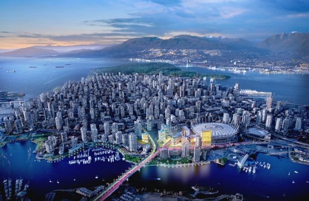
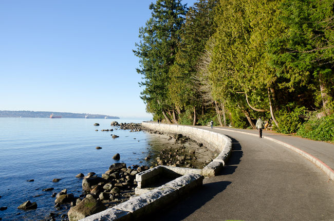
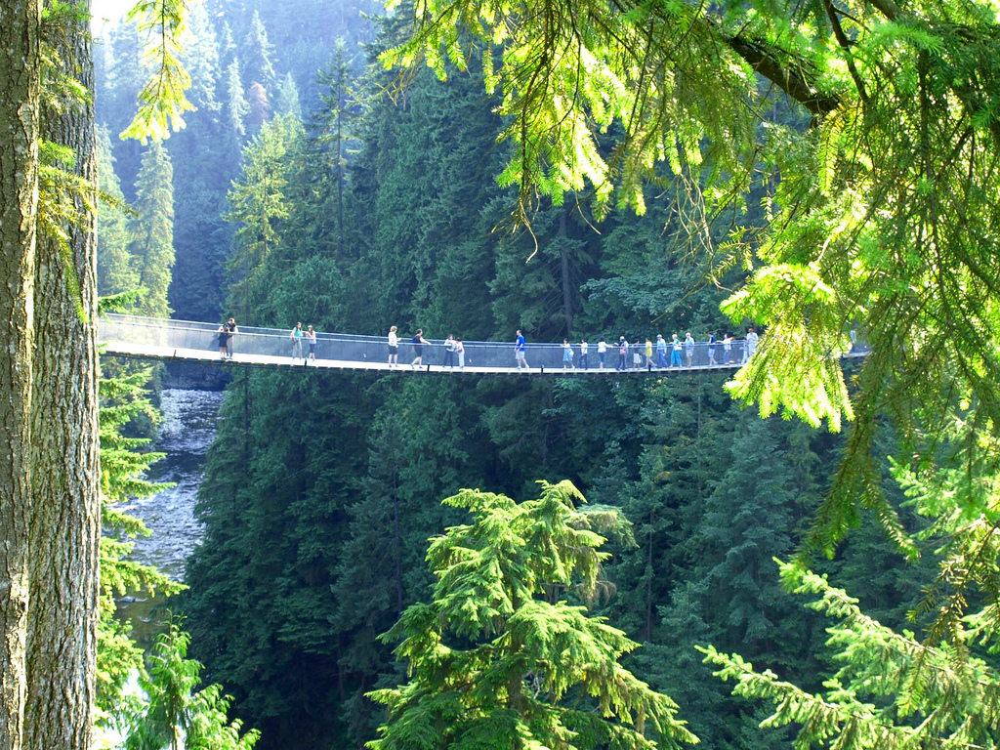
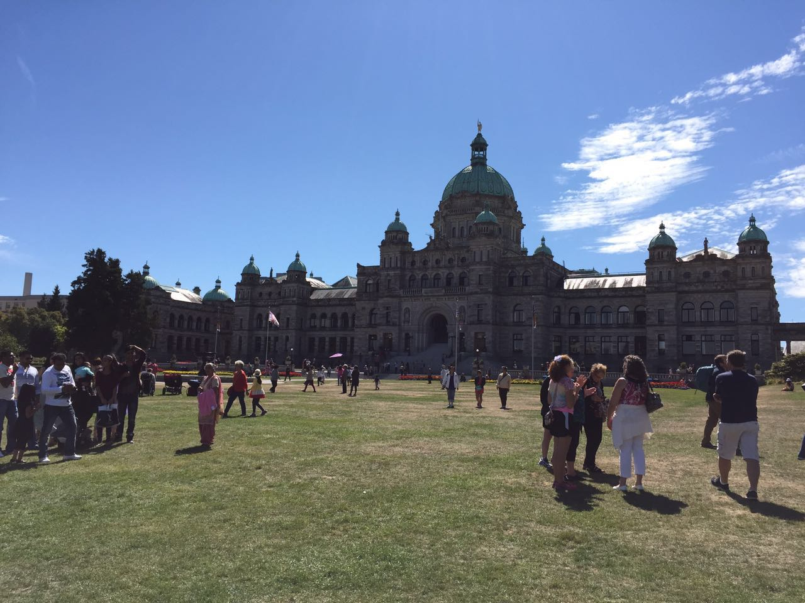
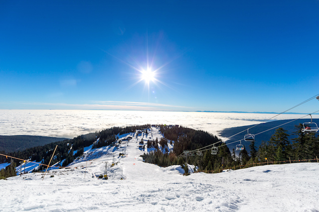
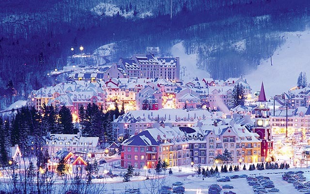

- Place
- Sight
- Information
DownTown Vancouver
Introduction: The Vancouver area is surrounded by some of the most stunning natural beauty in the world: mountains, ocean, rainforest, parks and beaches. This is a city like no other! With endless options for activities, sights and attractions, Vancouver is a city that begs to be explored.
Stanley Park
Introduction: Stanley Park is Vancouver's first, largest, and most beloved urban park! Explore the 400-hectare natural West Coast rainforest and enjoy scenic views of water, mountains, sky, and majestic trees along Stanley Park's famous Seawall. Discover kilometres of trails, beautiful beaches, local wildlife, great eats, natural, cultural and historical landmarks,
Capilano Suspension Bridge
Introduction: As you walk gingerly out on to the world's longest (140m/460ft) and highest (70m/230ft) suspension bridge, swaying gently over the roiling waters of tree-lined Capilano Canyon. The grounds here also include rainforest walks, totem poles, and a swinging network of smaller bridges strung between the trees, called Treetops Adventure.
Victoria Island
Introduction: Victoria is a unique blend of old world charm and new world experiences. As an island destination, Victoria offers visitors an escape from the hurried world and beams with ambiance. In Victoria, heritage architecture, colourful gardens and traditions like afternoon tea mix with outdoor adventure, authentic culinary experiences and eviable cocktail and craft beer scenes.
Grouse Mountain
Introduction: Grouse Mountain Skyride (North America’s largest aerial tram system) takes visitors on a 1,600 metre (1 mile) aerial journey up the mountain to the Alpine Station, 1,100 metres (3,700 feet) above sea level. Breathtaking panoramic views of the city, sea and surrounding mountains unfold as you climb.
Whistler
Introduction: Whistler was the Host Mountain Resort of the Vancouver 2010 Winter Olympics and Paralympic Games.Spring at Whistler Blackcomb is pure awesomeness. Bluebird skies, warm sun, soft snow, goggle tans, and après on the patio are waiting to seduce you with the best spring skiing & riding conditions anywhere.